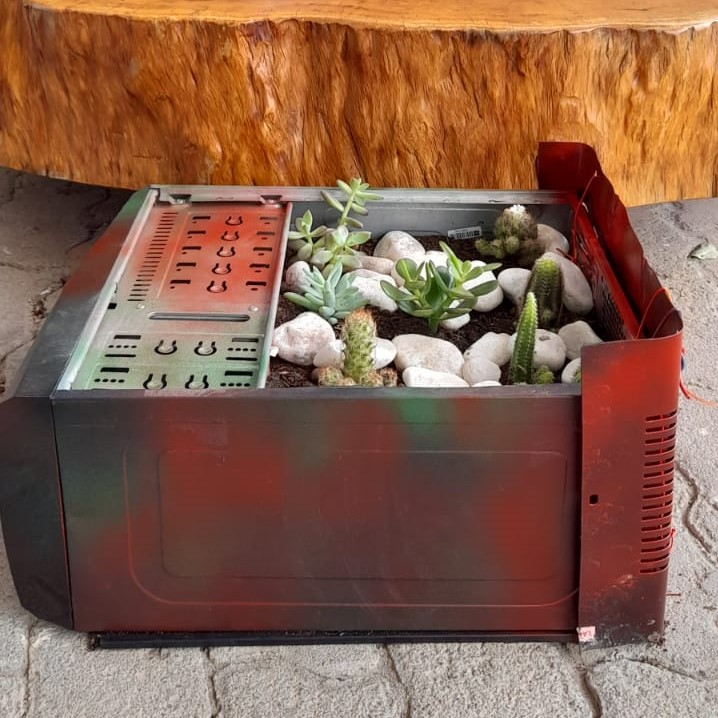

Informações sobre as plantas
Todo cacto é uma suculenta, mas nem toda suculenta é um cacto. “Os cactos representam o Novo Mundo, enquanto as suculentas vêm de regiões como África do Sul e Madagascar”, conta o paisagista Roberto de Sá.
As plantas, porém, são da mesma família. A diferença é que os cactos geralmente não têm folhas, armazenam água no caule rechonchudo, apresentam espinhos e uma maior diversidade de tamanhos – vão de dois cm a 15 metros de altura.
No cultivo doméstico, os especialistas recomendam um solo com muita areia para as duas espécies. “O excesso de umidade é fatal, por isso é bom garantir o escoamento de água preparando o vaso com uma camada de argila expandida e manta de drenagem”, explica a bióloga Assucena Tupiassu.
Ficha técnica
Origem: regiões desérticas da África e América. Características: plantas resistentes. O nome‘suculenta’ vem da capacidade de absorver e armazenar água nas folhas, caules, troncos e raízes.Floração: quase todas as espécies florescem. Ambiente: seco e ensolarado.
Solo
Ao todo, existem cerca de 200 tipos de cactos e suculentas no Brasil. Por precisarem de pouca água, as espécies são ideias para o cultivo em casa e no escritório.
Na hora de cuidar das suculentas, comece preparando bem o solo. Prefira produtos orgânicos ricos em nutrientes, como torta de mamona e húmus de minhoca.
Não deixe pratinhos sob o vaso, pois o excesso de água favorece o apodrecimento das plantas. Elas precisam de solos bem drenados, por isso confira se o vaso que receberá a muda tem um canal de saída para a água. Ponha uma camada de argila expandida (cerca de 5 cm de altura) ou de cacos cerâmicos e cubra com manta de drenagem para impedir que a terra feche o orifício. Acrescente uma mistura de areia, terra e adubo orgânico (1:1:1) e enterre o torrão da planta.
Previna-se de possíveis pragas preparando uma receita com 100 g de fumo de corda fervido em 1 litro de água. Coe o líquido, reserve por dois dias e pulverize a planta a cada três meses.
Luz
Ao todo, existem cerca de 200 tipos de cactos e suculentas no Brasil. Por precisarem de pouca água, as espécies são ideias para o cultivo em casa e no escritório.
Na hora de cuidar das suculentas, comece preparando bem o solo. Prefira produtos orgânicos ricos em nutrientes, como torta de mamona e húmus de minhoca.
Não deixe pratinhos sob o vaso, pois o excesso de água favorece o apodrecimento das plantas. Elas precisam de solos bem drenados, por isso confira se o vaso que receberá a muda tem um canal de saída para a água. Ponha uma camada de argila expandida (cerca de 5 cm de altura) ou de cacos cerâmicos e cubra com manta de drenagem para impedir que a terra feche o orifício. Acrescente uma mistura de areia, terra e adubo orgânico (1:1:1) e enterre o torrão da planta.
Previna-se de possíveis pragas preparando uma receita com 100 g de fumo de corda fervido em 1 litro de água. Coe o líquido, reserve por dois dias e pulverize a planta a cada três meses.
Rega
Ao todo, existem cerca de 200 tipos de cactos e suculentas no Brasil. Por precisarem de pouca água, as espécies são ideias para o cultivo em casa e no escritório.
Na hora de cuidar das suculentas, comece preparando bem o solo. Prefira produtos orgânicos ricos em nutrientes, como torta de mamona e húmus de minhoca.
Não deixe pratinhos sob o vaso, pois o excesso de água favorece o apodrecimento das plantas. Elas precisam de solos bem drenados, por isso confira se o vaso que receberá a muda tem um canal de saída para a água. Ponha uma camada de argila expandida (cerca de 5 cm de altura) ou de cacos cerâmicos e cubra com manta de drenagem para impedir que a terra feche o orifício. Acrescente uma mistura de areia, terra e adubo orgânico (1:1:1) e enterre torrão da planta.
Previna-se de possíveis pragas preparando uma receita com 100 g de fumo de corda fervido em 1 litro de água. Coe o líquido, reserve por dois dias e pulverize a planta a cada meses.